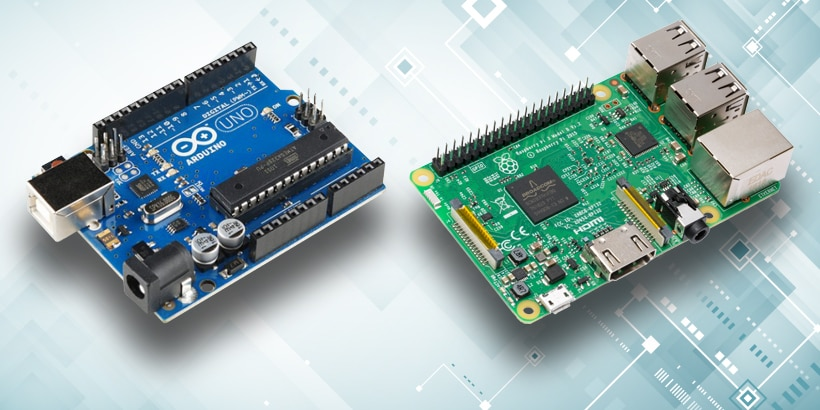

Arduino vs PI
Az Arduino az egy opensource azaz nyílt forráskódú elektronikai fejlesztőplatform/mikrocomputer,
különböző kisebb projektekre tervezve olcsón elérhető viszont nem annyira erős mint egy raspberry pi
A Bankkártya méretű Raspberry Pi, egy lapra inegrált BCM2835[2] alapú egykártyás számítógép,
amelyet oktatási célokra fejleztetek ki. A gép különböző Linux-disztribúciókkal működtethető az arduinoval szemben amire csak parancsokat lehet feltőltení
| x |
Arduino UNO |
Raspberry 1 model B |
| Processzor |
16 MhZ |
700 Mhz |
| RAM |
2 KB |
512 MB |
| Ár |
~16.000 forint |
~10.000 forint |
